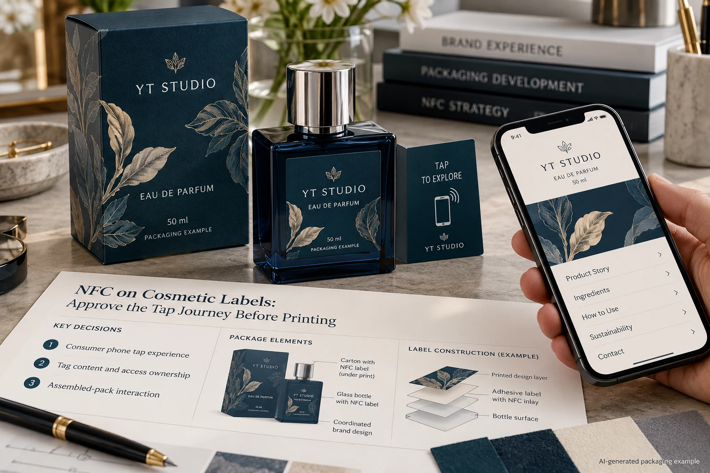
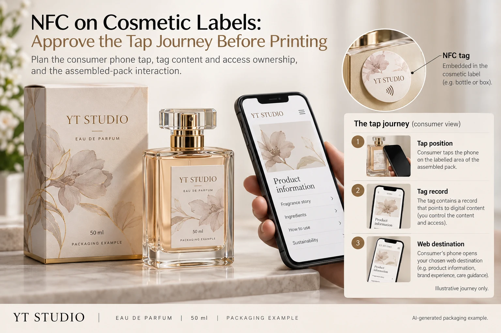

The perfume box now includes a tap invitation. Marketing expects a phone to open the product page. The printer receives the artwork, while another supplier prepares the tag. A finished-looking pack can reach approval without anyone owning the complete journey from the physical tap to the intended information.
Approve the assembled-pack tap interaction, stored tag content and web destination as one coordinated release, with separate accountable owners. An NFC mark on the artwork is not proof that the selected tag, phone and packaging arrangement deliver the expected result.

State the consumer task in one sentence
For example, the owner of an identified phone should be able to tap the marked area and reach the approved product-information page. That is a useful starting requirement. It does not automatically request authentication, payments, an application download or a digital passport.
NFC Forum describes short-range tap interactions, including opening a web address. Its technology overview does not establish performance for this perfume pack or security for a particular implementation. Ask the specialist what the actual proposed arrangement supports.
If the project only needs a visible route to a web page, compare whether an ordinary printed link or QR arrangement would meet the task more simply. The QR destination guide addresses that alternative. Adding a tag creates additional physical and data responsibilities that should have a purpose.
Separate the tag record from the final page
Ask what data is actually stored on the tag and how it is intended to be interpreted. Identify the tag reference, approved record content and the party responsible for encoding it. The layout file and the encoded record are different production inputs.
If the stored content leads to a web address, record that address separately from any later redirect and displayed page. Assign maintenance ownership. A page move can require a different response depending on how the approved record and web arrangement were designed.
Ask the specialist how write access or later changes are controlled for the chosen arrangement. Do not prescribe locking steps without the actual tag and recovery requirements. A device being writable or locked is not, by itself, an end-to-end authenticity system.
Place the interaction on the actual assembled pack
Provide the filled container, metallic decoration, closure, label layers and outer box. Have the specialist confirm the proposed tag placement and any integration constraints. A loose tag demonstration does not establish the interaction through a carton or beside a metallic cap.
Make the intended tap location understandable to the user and have the design owner confirm any mark usage. The printed invitation should point to the relevant place, not merely occupy an attractive empty corner. Do not add a certification or licensed mark on the assumption that all tags qualify.
Identify the phones or device arrangements and user conditions relevant to the project. Let the technical parties agree the review scope rather than inventing a universal compatibility list. Record both successful and unresolved observations for the actual sample.
Use a tap-to-content handoff record
| Stage | Keep with the release | Acceptance question |
|---|---|---|
| Physical pack | Pack revision, tag reference and placement | Does the sample represent the supplied package? |
| Stored record | Approved content, encoding source and owner | Is the intended record actually on the tag? |
| User interaction | Device scope, marked location and agreed observations | Can the specified user complete the intended task? |
| Web content | Address, redirects, approved page and maintenance owner | Does the journey end at the correct information? |
| Exceptions | Unexamined devices, failures and responsible next action | What prevents final release? |
Begin with the task, pack and stored record. Have the relevant parties inspect the encoded data and review the intended interaction using representative assembled samples. Confirm the resulting destination against the approved product version. Resolve a changed record or placement with another identified review.

Keep retailer reading separate from consumer tapping
A warehouse or retailer may have an operational RFID requirement unrelated to the phone interaction. Do not assume its system reads the same arrangement merely because the package contains a tag. The receiving-system guide explains why the data task needs explicit ownership.
Similarly, a consumer phone opening a page does not verify a retail barcode, confirm product authenticity or establish privacy compliance for a web service. Those outcomes need their own requirements and evidence. Keep the printed promise within the function actually delivered.
Let the project stage determine the release
A hypothetical concept pack can show an illustrative tap area while technical feasibility remains pending. Label it as such in internal review; do not sell that mockup as a functioning interaction.
A production pack making a tap promise needs the coordinated acceptance record. Stop if the tag's contents are unknown, the page belongs to the wrong variant, the placement differs from the reviewed sample or nobody owns maintenance. The next action is a specific coordination request to the specialist, data and web owners.
For a cosmetic-label project, send the artwork, package dimensions, quantity, proposed tag placement and specialist requirements. Confirm which integration services are actually available; this guide does not claim a verified YT Labels NFC encoding or authentication capability.
Use the inquiry form to prepare the message, then share approved artwork and technical references by email or WhatsApp. The form does not upload attachments. Ask for acknowledgment of the printed-label role and every external dependency before freezing the final design.